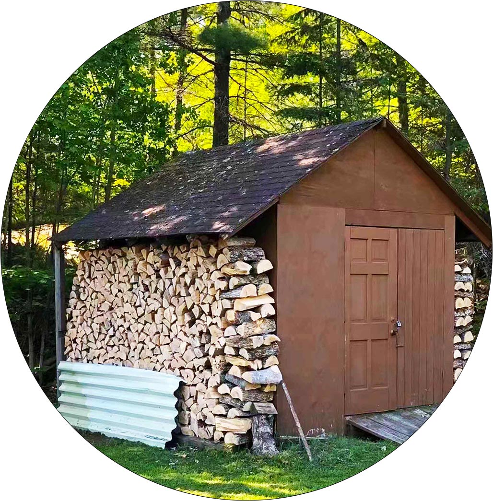

Welcome words about Green on the Table
Welcome to Green on the Table!
Enjoy a peaceful journey with plants!
About Green on the Table
What Green on the Table do...
Green On the Table introduce people to the interesting aspects of gardening and the beauty of plants. Under this premise, it also teaches people some planting tips and recommends some plants that are easy to feed. Green On the Table is focused on helping people who are interested in planting but do not have a lot of time and energy to manger it. We hope to help people plant some small potted plants that can be placed on the window sill or the computer, in this way to help people reduce stress and relax at work and enjoy life!
Contact me!
How to plant your own vegetables
Plant your own vegetables!
Start planting your own plants in your free time and enjoy the joy of harvesting!
Tips and skills about planting
Make Your Plants Grow Better!
Learn some useful planting techniques to make your plants grow healthier and more beautiful!
Three tips about planting
tip #1
Best Temperature
tip #2
Soil Quality
tip #3
Deadheading
READ MORE
Interesting facts about planting
Do you Know...
The green plants in your garden can very
well help you improve your mental health!
Studies have also found evidence that
being in green, or even being able to look
out on a green landscape, is linked with
better recovery from surgery, less anxiety
and depression, better stress management,
and many other positive effects. A vegetable
garden can yield the freshest and healthiest
foods available. You get to choose what you
grow, what you put in your body, and can gain
satisfaction from the knowledge that you were
the one to grow your healthy foods.